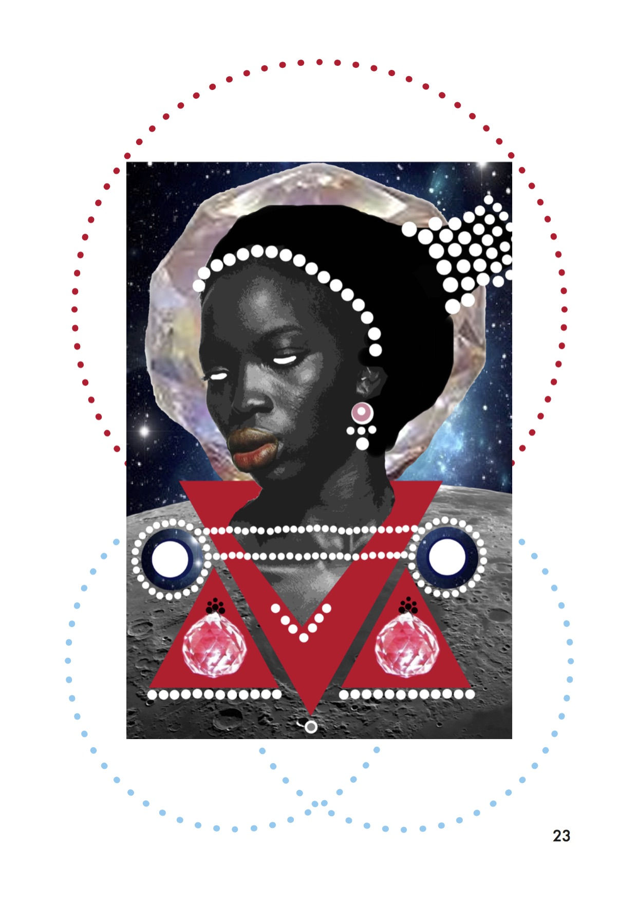
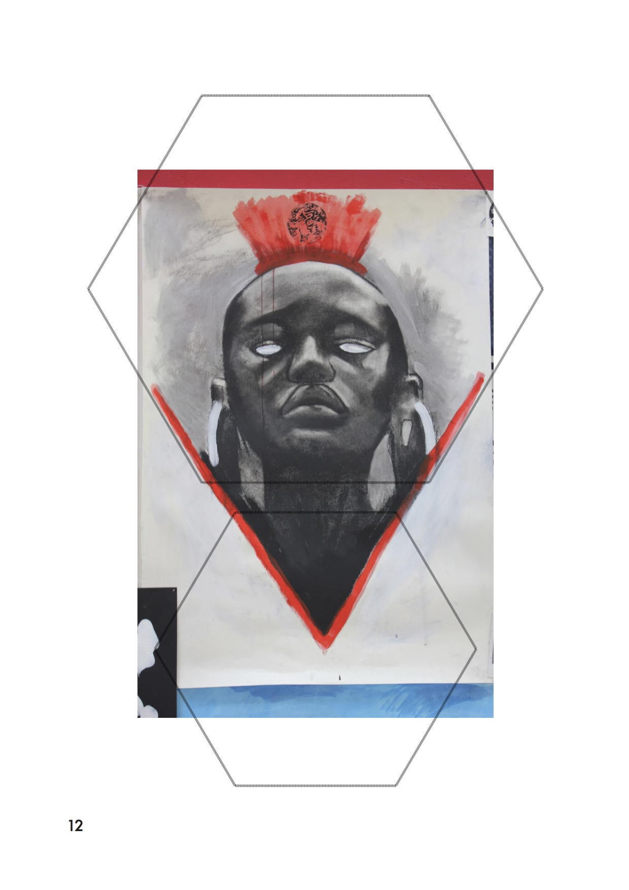
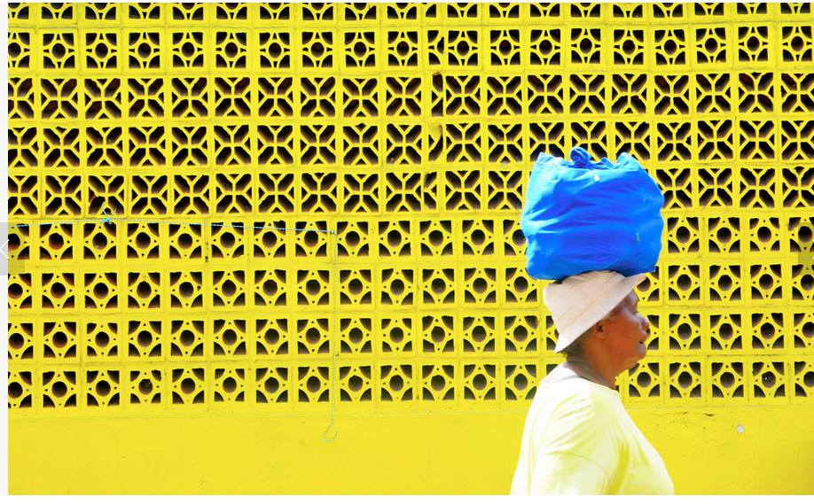

In The Big Sea (1940), the African-American novelist Langston Hughes narrates his departure from New York on a ship for Africa. In this journey he leaves behind everything he has known and been taught, as he seeks the world of his ancestors. By returning to the continent of his own people, he envisages that he will finally dispense with the hierarchical culture of America, a society in which African-Americans are placed firmly at the bottom. Upon his arrival in Africa, when he talks to the people he comes to face the shattering realisation:
"The Africans looked at me and would not believe I was a Negro. 'I am a Negro, too'. But they only laughed at me and shook their heads and said: 'You, white man! You, white man!""
This is the experience of many of us when we return to the country of our heritage and ancestors. Yet instead of feeling like we belong and that we have now come to a place devoid of the very discrimination, oppression and prejudice we suffer here, we find that we are not completely accepted in the way we envisaged. Frantz Fanon expresses this as the pain of being 'sealed into that crushing object-hood'. Being transformed into an external object inevitably leads us to internalise this view of ourselves; we end up conceiving of ourselves as different, 'other' or lesser, even in the place we assume we should belong - the nation of our ancestors.
This conception of ourselves is prevalent in our everyday lives in the UK, as encapsulated in Jean Rhys' novel, The Day They Burned The Books (1968): 'I was also tired of learning and reciting poems in praise of daffodils, and my relations with the few 'real' English boys and girls I had met were awkward. I had discovered that if I called myself English they would snub me haughtily: "You're not English; you're a horrid colonial"'. My life too is pervaded by this non-acceptance and by the belief that I am fundamentally different.
Much media space has been devoted to the notion that Britishness has a white racial connotation. Britain's multinational state has always been reluctant to grant the status of 'English', 'Scottish', 'Welsh' or 'Irish' to its non-white citizens, who have to find an identity within an ill-defined 'Britishness'. I have never called myself 'English'; from a very young age I was intrinsically conscious that I could not be 'English' because I was not white-skinned. Despite the identification of myself as British, the question that I routinely face is, 'But where are you really from?'' This constantly makes me acutely aware of my cultural displacement and weak sense of belonging.

The way in which the Indians, or 'browns' (since it encompassed Sri Lankans and Pakistanis as well), were grouped and stereotyped at school was deeply unsettling and also unfair. The constant jokes perpetuating Indian stereotypes - being studious, not going out, working in corner-shops, eating curry - and the throwing around of terms like 'freshie' - an Indian immigrant, typically having poor English skills with a mocked accent, talking mainly about education - was common.

This was, in part, cultural essentialism, which can be described in a broad sense as the simplification of ethnic minority cultures and a tendency to see them as having a small number of unchanging key characteristics and as being tightly bound entities. The conflation of different Asians - not recognising the cultural distinction between a Pakistani and an Indian - is insensitive and displays ignorance. There has been common failure to understand the complex nature of the identities of Britain's Asian minorities. Indeed to generalise about Asians even from a single 'nation' fails to take into account the colonial nature of those national boundaries when in fact a significant diversity of ethnic cultures within these colonial areas should be acknowledged. India's internal cultural heterogeneity is scantily appreciated; identities based on religion, caste, sub-caste, and various other kinds of descent groups, as well as rural/urban and regional differences create a variety of distinct yet interrelated cultures. Yet this was still condensable by some of my classmates to 'curry', 'Bollywood' and comically parodied knowledge of Hindu traditions.
In order to integrate with white people and to make friends outside of my ethnic group, I ended up partially rejecting my culture and heritage. I strove to escape that grouping, to be different, or specifically more 'white'. I transformed my manner of speaking, would go out more and engaged in activities and sports which were predominantly 'white'. Whilst I have largely succeeded, it is unreasonable that I had to try as hard as I did; I found myself putting in excessive effort and time to break through the white mould which seemed to surround them. When my white classmates first saw me they would not be as friendly or as approachable as they were to the other white people. It was only after they had got to know me, seeing me for who I was beneath my skin colour and beyond my ethnicity, that I was able to make good friendships. In a recent article in the New York Times, Nicholas Kristof argued that the problem is that there's "a broad swath of people who consider themselves enlightened, who intellectually believe in racial equality, who deplore discrimination, yet who harbor unconscious attitudes that result in discriminatory policies and behavior." Furthermore, the 2001 Reports about 'segregation' suggested, as confirmed by opinion polls, that whites are less likely to want to actually engage, mix and 'integrate' with ethnic minorities than the other way round.

It is now that I am more mature and more accepting of myself and of my heritage that this racial-cultural discrimination and institutional oppression has caused me to despise the cultural systems on which a Western, British sense of superiority is founded. Yet simultaneously while hating 'England', it still feels like my home; I do not identify with India in the same way. Living in British society, going through a British education, engaging with British popular culture, and consequently developing hybrid, complex, syncretic, multiple, hyphenated identities means that I do not outright reject all things 'white British' in a simplistic and ignorant way. My identity is in flux between conflicting, competing cultures. While I identify with one emotionally as my 'home', I also identify with the other as my heritage.
The Zimbabwean novelist Tsitsi Dangarembga delineates this idea of multiple identities and conflicting attitudes as the native’s 'nervous condition', whereby one’s existence is strung out between the incompatible layers of different cultures. 'When an original culture is superimposed with a dominant culture through education, it produces a nervous condition of ambivalence, uncertainty, a blurring of cultural boundaries, inside and out, an otherness within.' Living in a society where these different cultures are forcibly made to interact means that I find myself trying to live with two different, incompatible identities at once, or the pain of what Fanon describes as a hybridized split existence. The attempt to reconcile these different identities, amidst the layers of different value systems is part of a process of becoming white, changing your race by assimilating to the dominant culture. Yet despite absorbing white values, I never quite can become 'white enough'.
While the culture of my generation of Indians living in the UK is certainly changing due to the immersion in British culture, as cultures are disposed to evolve due to increasing interaction with other cultures, we should not feel that we must sacrifice our heritage and culture in order to increase our sense of belonging within another culture. The impossibility of becoming white means that we should accept ourselves for who we are. Yet we must understand that we may not be able to fully identify with the country of our heritage, the home of our parents, nor will we feel like we fully belong here in the UK alongside our white counterparts. We must accept that living as a minority in a majority-white culture, we will inevitably find ourselves living this hybridized split existence of conflicting cultural identities.
The contemporary importance of this issue is demonstrated by the many people experiencing difficulties growing up in a world where their competing cultural identities cannot be easily ascribed to the 'easy' identities of 'English' or 'Indian' or 'British-Indian' etc. that society seems to often want to class them as. Yet the social importance of this issue will only be accentuated in the future. Diasporas, cultural interaction and intercultural marriage, all underwritten by increasing globalization, will hugely increase the number of people born to parents of differing cultural backgrounds or born into a society with a cultural environment dissociated from that of their parents. Thus an understanding and appreciation of the effect that hybridized cultures can have on people and society is hugely important for future social cohesion in our globalized world of unprecedented cultural interaction. This understanding and appreciation has thus far not been forthcoming.